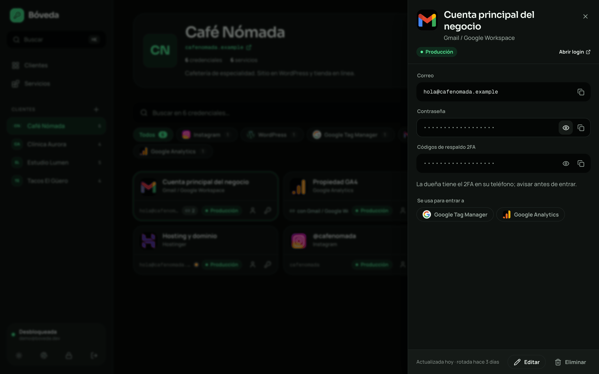

Organizada por cliente
Creas al cliente y enlazas las cuentas que tiene en cualquier servicio. Se acabó la lista de accesos sueltos.
Open source · MIT · autoalojada
Eres freelance. Cada cliente trae su Gmail, su hosting, su base de datos y su servidor. Bóveda los organiza por cliente y cifra todo en tu navegador antes de que salga.
Antes
Con Bóveda

Todas las capturas usan datos demo ficticios.
Creas al cliente y enlazas las cuentas que tiene en cualquier servicio. Se acabó la lista de accesos sueltos.
Ctrl K o ⌘K: escribes dos letras y copias una contraseña sin abrir nada.
Touch ID, Face ID o Windows Hello con passkeys, sin debilitar el cifrado.
Google, Meta, Supabase, Vercel, Cloudflare, Stripe y más, cada uno con su logo y su plantilla de campos.
Marca que Tag Manager entra con el Gmail del cliente y los atajos copian el usuario y la contraseña correctos.
El portapapeles se limpia a los 30 s, la bóveda se bloquea a los 15 min sin uso y las contraseñas viejas se marcan para rotar.
Tu contraseña maestra nunca viaja. De ella se deriva una llave en tu navegador, y con esa llave se cifra cada credencial. La base de datos solo guarda esto:
credentials.payload
4aec9e3500aff278f418e6db68d44ca2317b4e3fd761a088f030
0db75f38633edcafb417627ac545abc931a791e792d5ade674e5
a9c0856a48eb8207ca9ebee77522851b5477861a7063a5bdf8a3Necesitas Node 22 y un proyecto de Supabase; el plan gratuito alcanza.
# 1 · clona e instala
git clone https://github.com/yairhdz24/boveda7k.git
cd boveda7k && npm install
# 2 · pega las migraciones de supabase/migrations en el SQL Editor
# 3 · copia tus llaves públicas de Supabase
cp .env.example .env.local
# 4 · listo
npm run devSi te ahorra diez minutos, regálale una estrella. Ayuda a que otros freelancers la encuentren.
Dale estrella en GitHub